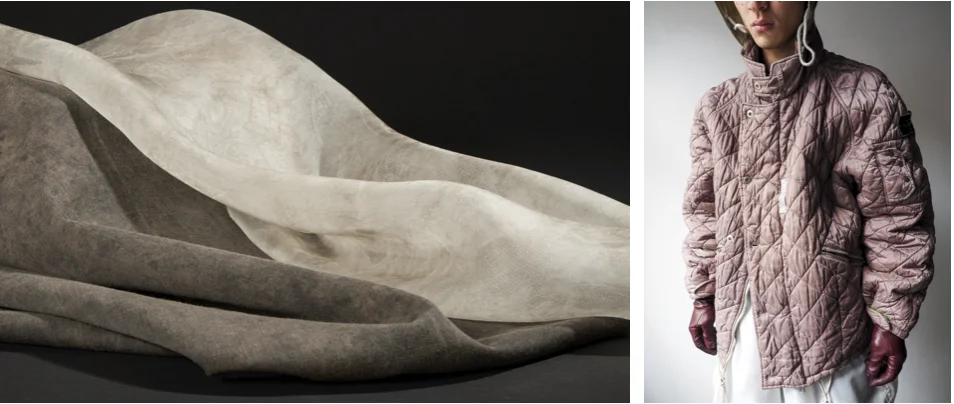
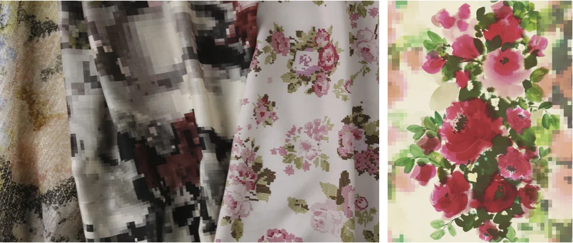

Autumn/Winter 2027/28
Global fashion direction.
Silhouette, detail, cloth and colour.
Seasonal directions
Four reports across silhouette, textiles and pattern.
No stories match this search.

PREMIÈRE VISION / A/W 27/28 MATERIAL DIRECTIONWashed surfaces.
Tactile depth.
Faded colour, worn effects and irregular texture bring a worked character to cloth. A closer reading of the season’s material direction.
Read the report ↗Botanicals,
in a different scale.
Enlarged motifs, blurred edges and pixelated colour change the reading of familiar florals. Textile references from Première Vision’s seasonal material research.
Explore the direction ↗
About this forecast
An independent SOHO Fashion interpretation for Mark’s, informed by WGSN research, international textile direction and published fashion imagery. Report titles and commentary are our editorial synthesis. Images retain their original source and season; A/W 2026 fashion imagery is used as an observed reference.